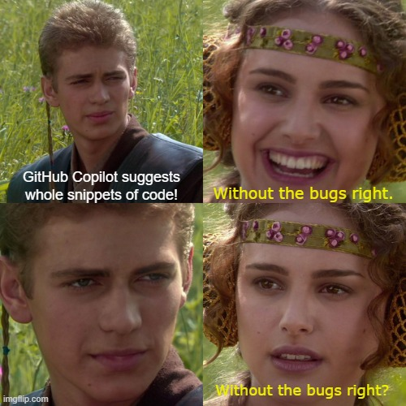

The hottest new tech of last week is Github Copilot. It seems like almost all programmers are playing or waiting to play with this new fancy AI coding assistant.
Some say this is an innovative game-changer that will totally change the world of programming!
But I am not so optimistic about it. From my perspective as an old-school programmer, this kind of tool looks fancy but is not as helpful as some people claim. Not to mention, it will be no substitute for real programmers.
Let me explain.
Coding Faster is Not a Big Deal
Think about it. How much time do you spend on coding?
In fact, in most software companies, the time we spend on writing code is not a high proportion of the overall software development cycle — even less than a quarter of it.
We spend much more time on requirements analysis, technical design, testing, debugging, and team collaboration.
Software engineering is hard, mostly because of the high complexity of the real world. We can’t change this — over time, abstractions in computing are inevitable. No project ever failed due to slow coding.
Coding faster will not make you a better programmer. Abstraction, design, and the experience of real-world engineering are what will make you a better software engineer.
Some older programmers type slowly due to poor eyesight, but they write bug-free code.
Will it Help Us to Code Faster?
Years ago I was fascinated by this kind of programming aid. There’s a popular template system in Emacs called snippets. We define our own templates and functions, then a shortcut generates a code template and we just fill in the rest.
It looks cool, really cool. It makes me into a super programmer, like in the movies!
But, after I got deep into it, I realized it wasn’t as useful as I thought. Coding speed is not my bottleneck, and I spend less time on coding as my career develops.
tabnine is a similar AI programming assistant tool with Copilot, which generates part of the code based on your previous inputs. Copilot will even makes suggestions based on your comments, the name of the function, and so on.
The problem is, when I’m coding with it, I need to constantly review whether the auto-completion is right.

This is a distraction for me. Imagine you are an experienced and solid programmer — this AI tool that you are pair-coding with is a naïve and occasionally dumb one. No, I don’t want it!
From my experience, the best way to make me program faster is:
- focus, focus, and focus.
- Think clearly before coding
Shortcuts, variable completion, class attributes, and method names completion are all helpful for coding faster — they will help your typing catch up with thinking.
But code generation is a different thing. It will distract you, even more than 50% of the completion catches your coding intention, the other nonsense part will slow you down.
Of course, if the codebase contains a lot of repetitive pieces or logic, this kind of tool can definitely speed up your coding. For example, most front-end programming, and web programming contains lots of similar CRUD logic.
But I don’t believe this stuff will make a fundamental change to programming. And, at least for me, I won’t be coding faster with it.
Will it Help With Learning Programming?
Copilot will help to reduce duplicated tasks, like searching code from the Web. As a beginner to learn programming, it may help you, since when you type some keywords, the code snippet will show up in front of you.
However, let me remind you that copying and making it work is not a good way to improve your coding ability or quality of your work.
Instant code suggestions may make you happy when coding, but they will not help you in the long term.
Programming a craft, just like writing and painting. We are writing source code to express ideas. Do you think it’s a good idea to let an AI assist a learner in what the next sentence or paragraph will be?
Word completion will help, but sentence auto-completion will become a burden.
It’s the same as writing. If we want to be better at programming, the only way is to code and read a lot.
John Carmack, when talking about learning programming says:
Avoid “cookbook programming”, where you copy and paste bits of code that you have found to make something work. Make sure you fully understand what everything it actually doing, and that you are comfortable applying the techniques in other situations.
The Potential Risks
There are several extra risks come with AI coding assistance:
Potential bugs. If the user didn’t pay attention to review the generated code, it will be a nightmare.
The copyright and ownership issue of code. If a code snippet is generated from GPL authorized code base and is adapted by a commercial company. Whose fault is it if it does not work? And who is the owner when the code is generated?
Security. Is it possible for hackers to train some code snippets intensively and induce attacking code to users?
The Potential Benefits
Of course, as a new thing, Copilot may also bring some benefits in some scenarios.
To make this tool more useful, we may trend towards writing more meaningful names and better documents.
Interviewing may be easier, if we are allowed to use it.
It may give you a feeling that someone is always there for you and you are not so alone when programming. Maybe it’s a better feeling than a little yellow duck!
Join my Email List for more insights, It's Free!😋